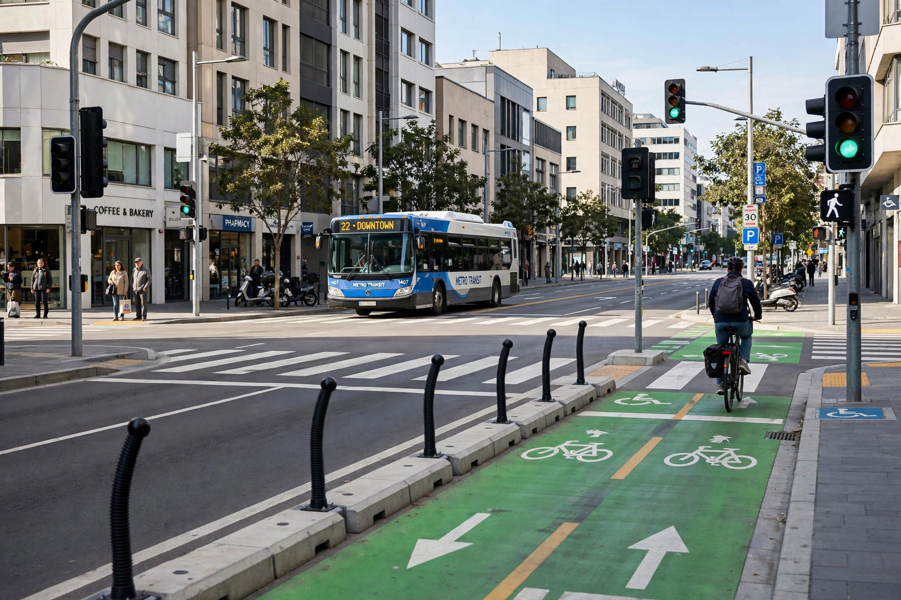

From Wikipedia, the free encyclopedia
| Road traffic safety | |
|---|---|
| Global deaths | Approx. 1.19 million per year (WHO estimate, 2023) |
| Leading factor | Human error (speeding, impairment, distraction, fatigue) |
| Key frameworks | Safe System / Vision Zero, Haddon matrix |
| Main agencies | WHO, national highway safety administrations |

Safe street design separates road users and controls speeds to prevent fatal crashes.
Road traffic safety refers to the methods and measures used to prevent road users from being killed or seriously injured. Typical road users include pedestrians, cyclists, motorists, vehicle passengers, horse riders and passengers of on-road public transport, mainly buses and trams. Road traffic injuries are a major global public-health problem: the World Health Organization estimates that approximately 1.19 million people die each year in road traffic crashes, and between 20 and 50 million suffer non-fatal injuries. Road injuries are the leading cause of death for children and young adults aged 5–29 years.
Road fatalities have occurred since before the motor age, but the first recorded death of a pedestrian by a motor vehicle is generally held to be Bridget Driscoll, killed in London in 1896; the coroner reportedly hoped such a thing would never happen again. Mass motorisation in the twentieth century drove deaths sharply upward, prompting countermeasures such as licensing, traffic signals, paved roads and vehicle safety standards. In the United States, Ralph Nader's Unsafe at Any Speed (1965) galvanised public pressure for federal safety regulation. In many high-income countries, fatalities peaked around 1970 and have since declined substantially, even as traffic volumes grew, thanks to safer vehicles, roads and laws; in much of the low- and middle-income world, where over 90% of deaths now occur, the burden continues to rise.
Interventions are conventionally grouped into education, enforcement and engineering, extended in modern practice to vehicle standards, emergency medical care and speed management. The Haddon matrix, developed by William Haddon Jr., organises countermeasures by phase (pre-crash, crash, post-crash) and factor (human, vehicle, environment). The Safe System approach, embodied in Sweden's Vision Zero policy adopted in 1997, accepts that humans make errors and seeks to design the road system so that errors are not fatal, with shared responsibility between road designers and road users.
Effective measures include lower urban speed limits and traffic calming, separated cycling infrastructure, seat-belt and helmet laws, drink-driving enforcement with random breath testing, graduated driver licensing for novices, vehicle crashworthiness standards and electronic stability control, and trauma care systems. International coordination is promoted through the Geneva and Vienna Conventions on Road Traffic, which harmonise traffic rules and signs across borders.
Risk varies enormously between countries: fatality rates per 100,000 population range from under 3 in much of northern Europe to above 25 in parts of Africa. Motorcyclists, pedestrians and cyclists — so-called vulnerable road users — account for more than half of all deaths globally. The United Nations proclaimed a Decade of Action for Road Safety 2021–2030 with a target of halving deaths and injuries by 2030.